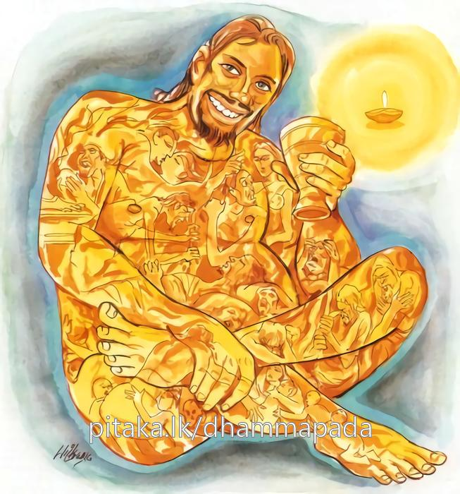

11-1 විශාඛා උවසියගේ පන්සියයක් යෙහෙළියන්ගේ කථා පුවත
මෙම කතාව සද්ධර්ම සාගරයෙන් ද කියවන්න.
කො නු හාසො කිමානන්දො නිච්චං පජ්ජලිතෙ සති
අන්ධකාරෙන ඔනද්ධා පදීපං න ගවෙස්සථ.
සතතයෙන් (මේ ලෝකසන්නිවාසය රාගාදි එකොළොස් ගින්නෙන්) ඇවිල ගෙණ දිලියෙන කල්හි (තොප හැම දෙනාට) සොම්නසෙක් වත් සතුටෙක් වත් කවරේ ද? (දුඃඛාදි අට තන්හි උපදනා සම්මෝහ යැ යි කියන ලද) අවිද්යාන්ධකාරයෙන් වළඳනා ලද්දා වූ තෙපි (ඒ මොහඳුර නසනු පිණිස මාර්ගඵලප්රඥා සංඛ්යාත) ප්රදීපය කුමට නො සොයවු ද?

"කොනුහාසො කිමානන්දො" යන මෙම ධර්මදේශනය ශාස්තෲන් වහන්සේ දෙව්රම් වැඩසිටිය දී විශාඛාවගේ යෙහෙළියන් නිමිති කරගෙන දේශනා කළහ.
සැවැත් නුවර පන්සියයක් කුල පුත්රයෝ තම තමන්ගේ භාර්යාවන් පන්සියයක් අප්රමාදීව කටයුතු කරන අය ලෙසට හඳුන්වා විශාඛා මහා උපාසිකාවට පවරා දුන්හ. මෙම කාන්තාවෝ විශාඛාව උයනට හෝ විහාරයට යනවිට ඇය සමගම යති. මෑලා එක් අවස්ථාවක දින හතක් පුරා උත්සවය පවත්වන්නේ යයි දැනුම් දුන් පසු තම තමන්ගේ සාමි පුත්රයන්ට රා බීමට අවස්ථාව ලබා දුන්හ. ඔවුහු දින හතක් රා බී මධුපානෝත්සවය අවසන් කර අටවැනි දින වැඩ සඳහා යාමට අණබෙර නාදකළ විට ඔවුනොවුන්ගේ කර්මාන්ත සඳහා නික්ම ගියහ.
මේ ස්ත්රීහු ද අපගේ ස්වාමීවරුන් ඉදිරියේ සුරාපානය කළ නොහැකියයි ද ඉතිරිවු සුරා ඇති හෙයින් පානය කරමුයි කියා විශාඛාව වෙත ගොස් ආර්යාවනි උයන් නැරඹුමට යමුයි යෝජනාකර හොඳයි මෑණිවරුනි ! කළ යුතු දෑ කර පැමිණෙන්නැයි පැවසූවිට, පසුව පැමිණ විශාඛාව සමග ගොස් සැඟවී රහසිගතව සුරා පානය කර මත් වී හැසිරුනාහ. විශාඛාව ද මොවුන් විසින් අයුතු දෙයක් කරන ලදී. දැන් බුදුන්ගේ ශ්රාවිකා වූ විශාඛාව රා බී හැසිරෙතියි තීර්ථකයෝ ද ගර්හා කරන්නේ යයි සිතා එම ස්ත්රීන්ට මෙසේ කිවාය. මෑණිවරුනි ඔබලා අයුතු දෙයක් කරන ලදී. මට ද අපකීර්තියක් ඇතිවිය. ඔබලාගේ ස්වාමිවරු ද කිපෙනු ඇත. දැන් කුමක් කරමුද? ආර්යාවනි අපි ගිලන් වූ බවත් පෙන්වා සිටිමු. එසේ නම් එලෙස ගිලන් වූ බවක් පෙන්නා සිටිව්, ඈලා නිවෙස්වලට ගොස් ගිලන්වූවන් සේ සිටියහ. ඈලාගේ ස්වාමී පුත්රවරු - එකිනෙකාගැන විමසා සියළු දෙන ගිලන් බව අසා - මෑලා ඉතිරිවු සුරා බොන්නට ඇතැයි සලකමින් ඔවුන්ට තලා පෙළා හිංසාවන් කළහ. ඔවුන් ඊට පසුව ද මධුපාන උත්සවයක දී රාබොනු කැමතිව විශාඛාව වෙත එළඹ ආර්යාවනි අපව උයනට ගෙනයන්නැයි කියා සිටිවිට.
නුඹලා පෙරදින අපකීර්තියක් ඇති කළහ. යන්න මම නම් නුඹලා ගෙනයන්නේ නැතැයි ඇය පැවසුවාය. එසේ කියා ප්රතික්ෂේප කළවිට මෙවර එලෙස නොකරමියි පොරොන්දු දී නැවත ඇය වෙත පැමිණ මෙලෙස කීහ. ආර්යාවනි අපි බුද්ධ පුජා කරන්නට කැමැත්තෙමු. අපව විහාරයට ගෙනයන්නැයි කිවාහුය. හොඳයි - මෑණියෙනි විහාරයට යාම වටියි. වතාවත් කරමු යනුවෙන් පැවසුවාය. ඈලා මල්ගොමුවල සුවඳ ද්රව්ය හා මල් ගෙන රා පිරුණ කළ ගෙන එක් අතකින් එල්ලාගෙන ලොකු රෙදි කඩකින් වසාගෙන විශාඛාව සමග විහාරයට ගියාහුය. විහාරයට පිවිසෙන අතරතුර අහුමුලුවට ගොස් මුට්ටි වලින් රා බී භාජන විසිකර ගොස් දම්සභා මණ්ඩපයේ දී බුදුන් ඉදිරියේ වාඩිවූහ. විශාඛා මහෝපාසිකාව ස්වාමීනි මෑලාට ධර්ම දේශනා කරන්නැයි පැවසුවාය. ඈලා ද සුරාමතින් යුතුව සැලෙන වැනෙන සිරුරින් නටන්නෙමු ගයන්නෙමු යයි සිතූහ. අනතුරුව මාර කායික දේවතාවියක් බුදුන් ඉදිරියේ විකාර රඟ දක්වන්නෙමියි සිතා ඈලාගේ සිරුරුවලට ආවේෂ වුවාය. එම කාන්තාවන් අතරින් එකියක්, ශාස්තෲන් වහන්සේ ඉදිරිපස - අත්පුඩි ගසා සිනාසීමට ද තව එකියක් නැටීමට ද පටන් ගත්හ. බුදුහු මේ කුමක්දැයි විමසා මාරකායික දෙව්දුවගේ ආවේශ වීම දැක මොවුන්ට මාරකායික දෙව්දුවට ඉඩදිම නුසුදුසු යයි සිතා සංවේග ඇතිකරලීම සඳහා ඌර්ණ රෝම ධාතුවෙන් රශ්මිය පිටකළහ. එකෙණෙහි අන්ධකාර මවාලුහ. මරණබියෙන් ඔවුහු බිය පත්වූහ. එනිසාම කුස තුළ රා වියළී ගියේය. බුදුහු අසුනේ සිටියදීම අතුරුදහන්ව මහමෙර මුදුනේ සිට ඌර්ණ රෝම ධාතුවෙන් රශ්මිය විහිදවුහ. එකෙනෙහි චන්ද්රයන් දහසක් පැයූ ලෙස ආලෝකමත් විය. අනතුරුව එම ස්ත්රීන් අමතා තෙපි මා ඉදිරියට එනවිට පමාවූවන් ලෙසට පැමිණීම සුදුසු නොවේ. තොපගේ ප්රමාදී බව නිසා මාරකායික දේවතාවියට අවස්ථාව ලැබී අනුචිත ස්ථානයේ දී සිනාසීම් ආදිය කරවුවාය. දැන් තොපගේ රාගාදි ගිනි නිවනු පිණිස උත්සාහ කිරීම වටනේ යයි පවසා මේ ගාථාව දේශනා කළහ.
නිතර දැවෙනා තැවෙන කල්හී
කොහෙද සතුටක් කවර නැටුමක්
අඳුරු ලෝකෙන් එතෙර වන්නට
ඇයිද පහනක් නොදල්වන්නේ
එහි - ආනන්දො යනු සතුටයි මෙසේ කියන ලද්දේ වේ. මෙලොව ජීවිතයේදී රාග - ආදී එකළොස් ගින්නෙන් නිතර පජ්ජලිතෙ දැවෙන විටදී කොනු ඔබලාට කිනම් සිනාවෙක් ද - සතුටක්ද? මෙබඳු දැ නොකළයුතු දැ නොවේද? අෂ්ට වස්තුක අවිද්යා අන්ධකාරයෙන් වෙළුනා වූ තෙපි එම අවිදු අඳුර දුරුකර ගැනීම පිණිස කුමක් නිසා නැණ පහන නොසොයව්ද? නොකරව්ද? ධර්ම දේශනාවසානයේ පන්සියයක් වූ ඒ ස්ත්රීහු සෝවාන් ඵලයෙහි පිහිටියාහුය. බුදුහු ඔවුන් අචල ශ්රද්ධාවේ පිහිටි බව දැන මහමෙර මුදුනින් බැස බුද්ධාසනයෙහි වැඩ සිටියහ. අනතුරුව විශාඛාව මෙසේ පැවසුවාය ස්වාමීනි ! මේ ස්ත්රීහු පාපි සුරාපානය නිසා ඔබ වහන්සේ ඉදිරියේ මෙබඳු අශෝභන ලෙස හැසුරුනේ යයි පවසා ස්වාමිනි මේ සුරා කවදා ඇතිවිදැයි විමසුවාය. බුදුහු අතීත කථාව ගෙනහැර දක්වා කුම්භ ජාතකය දේශනාකළ වදාළහ.